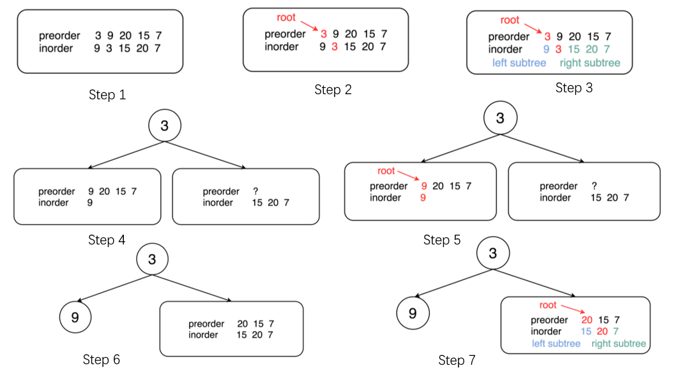
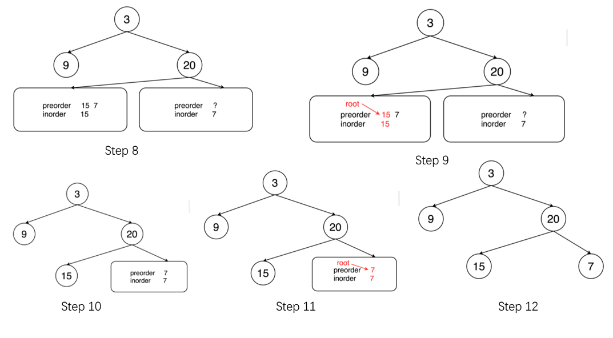

LeetCode-105-根据先序和中序遍历构造树
1. 题目描述
很简单的需求，给出一个二叉树的先序和中序遍历结果，返回这颗二叉树。1
2
3
4
5
6
7
8
9
10
11
12输入:
前序遍历 preorder = [3,9,20,15,7]
中序遍历 inorder = [9,3,15,20,7]
输出:
3
/ \
9 20
/ \
15 7
2. 思路
手动去分析倒是不难，我觉得难点就在于怎么样一种递归的形式统一的描述出来，特别是一些边界情况，比如没有左子树、没有右子树等等，我们自己在手动打草稿时就很容易陷入一种我称为“递归不像递归，迭代不像迭代的”糟糕的处境，也就是在递归的代码中又考虑了很多的特殊情况，存在大量的if-else语句。
参考了一下官方题解，这里做个记录，个人觉得这个算法非常经典也很有用，先图示一下算法的流程，如下：


稍微概括一下就是这样：我们把中序遍历当做是我们的“向导”，每次找到中序遍历中对应树根结点的那个值，那么这个值左边的肯定是左子树的中序遍历结果，这个值右边的就是右子树的中序遍历结果了。而树根结点的取值是什么呢？就是先序遍历的第一个值呀！
然后我们不断地将中序遍历结果二分，下一次递归时，子树的树根结点又必然是先序遍历中的下一个值。因为先序遍历是按照根、左、右的顺序。
3. 代码
Java 实现1
2
3
4
5
6
7
8
9
10
11
12
13
14
15
16
17
18
19
20
21
22
23
24
25
26
27
28
29
30
31
32
33
34
35
36
37
38
39
40
41
42
43
44
45
46
47
48
49
50
51
52
53
54
55
56
57
58
59
60
61
62
63
64
65
66
67public class PreOderAndInOrder2Tree105 {
private int preOrderIndex;
private int[] preorder;
private int[] inorder;
public TreeNode buildTree(int[] preorder, int[] inorder) {
if(preorder.length==0)
return null;
this.inorder=inorder;
this.preorder=preorder;
this.preOrderIndex=0;
return helper(0,inorder.length-1);
}
private TreeNode helper(int left,int right)
{
if(left==right)
{
preOrderIndex++;
return new TreeNode(inorder[left]);
}
// 找到根节点所在中序遍历中的下标
int rootVal=this.preorder[preOrderIndex++];
int rootValIndex=findInOrderElementIndex(rootVal);
TreeNode rootNode=new TreeNode(rootVal);
// 递归
// 没有左子树
if(rootValIndex==left)
rootNode.left=null;
else
rootNode.left=helper(left,rootValIndex-1);
// 没有右子树
if(rootValIndex==right)
rootNode.right=null;
else
rootNode.right=helper(rootValIndex+1,right);
return rootNode;
}
// 在中序遍历中找到指定值的位置，没找到用-1表示
private int findInOrderElementIndex(int val)
{
for(int i=0;i<this.inorder.length;i++)
{
if(inorder[i]==val)
return i;
}
return -1;
}
public static void main(String[] args) {
PreOderAndInOrder2Tree105 s=new PreOderAndInOrder2Tree105();
TreeNode tree=s.buildTree(new int[]{1,2,3},new int[]{1,2,3});
System.out.println(tree);
}
}
这个代码还有一个地方可以优化，那就是每次去找树根结点索引的代码块，我们这里每次都会遍历一次整个中序遍历的结果，其实可以预先用一个hashMap缓存起来。
4.类似题
- LeetCode 106-根据后序和中序遍历构造树
这个其实和第105题是完全一样的思路，只不过后序遍历的顺序为左、右、根,所以我们要反着来访问后序遍历的结果，并且先构造根节点的右子树，再构造左子树，此时我们也可以加上索引缓存，代码如下：1
2
3
4
5
6
7
8
9
10
11
12
13
14
15
16
17
18
19
20
21
22
23
24
25
26
27
28
29
30
31
32
33
34
35
36
37
38
39
40
41
42
43
44
45
46
47
48
49
50
51
52
53
54
55
56
57
58
59
60
61
62
63
64
65
66
67
68
69
70
71/**
* @ClassName InOrderAndPostOrder2Tree
* @Deacription // TODO
* @Author LiuZhian
* @Date 2020-02-27 17:48
* @Version 1.0
**/
public class InOrderAndPostOrder2Tree106 {
private int postOrderIndex;
private int[] postorder;
private int[] inorder;
public TreeNode buildTree(int[] inorder, int[] postorder) {
if (postorder.length == 0)
return null;
this.inorder = inorder;
this.postorder = postorder;
this.postOrderIndex = postorder.length - 1;
return helper(0, inorder.length - 1);
}
private TreeNode helper(int left, int right) {
if (left == right) {
postOrderIndex--;
return new TreeNode(inorder[left]);
}
// 找到根节点所在中序遍历中的下标
int rootVal = this.postorder[postOrderIndex--];
int rootValIndex = findInOrderElementIndex(rootVal);
TreeNode rootNode = new TreeNode(rootVal);
// 递归
// 没有右子树
if (rootValIndex == right)
rootNode.right = null;
else
rootNode.right = helper(rootValIndex + 1, right);
// 没有左子树
if (rootValIndex == left)
rootNode.left = null;
else
rootNode.left = helper(left, rootValIndex - 1);
return rootNode;
}
// 在中序遍历中找到指定值的位置，没找到用-1表示
private int findInOrderElementIndex(int val) {
for (int i = 0; i < this.inorder.length; i++) {
if (inorder[i] == val)
return i;
}
return -1;
}
public static void main(String[] args) {
InOrderAndPostOrder2Tree106 s = new InOrderAndPostOrder2Tree106();
TreeNode tree = s.buildTree(new int[]{9, 3, 15, 20, 7}, new int[]{9, 15, 7, 20, 3});
System.out.println(tree);
}
}
5. 附加关注点
有的小伙伴可能会想，能否根据一棵二叉树的先序和后序遍历序列确定这块唯一的二叉树？答案是：并不能。
你可以假设左斜二叉树和右斜二叉树，这两种树的先序和后序遍历结果都是一样的，因此我们就无法判断到底是左斜树还是右斜树。
所以只有中序+先序或中序+后序才能唯一确定一棵二叉树。